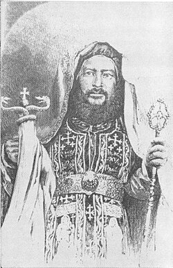
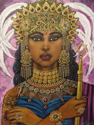

Les Grandes Figures de l'Éthiopie

Téwodros II
(1818-1868)
Réunificateur de l'Éthiopie
Empereur qui réunifia l'Éthiopie après l'ère des princes. Connu pour sa tentative de modernisation et son conflit avec la Grande-Bretagne qui aboutit à la bataille de Magdala.

Ménélik II
(1844-1913)
Vainqueur d'Adoua
Empereur qui a préservé l'indépendance de l'Éthiopie en battant les Italiens à la bataille d'Adoua en 1896. Grand modernisateur et bâtisseur de la nation éthiopienne moderne.

Haïlé Sélassié Ier
(1892-1975)
Dernier Empereur d'Éthiopie
Figure emblématique du panafricanisme, dernier empereur d'Éthiopie de 1930 à 1974. Roi des rois, il modernisa le pays et fut une voix influente sur la scène internationale.

Reine de Saba
(Xe siècle av. J.-C.)
Figure Légendaire
Souveraine légendaire du royaume de Saba dont l'histoire est profondément liée à l'Éthiopie. Connue pour sa visite au roi Salomon, elle est considérée comme la mère de la dynastie salomonide.